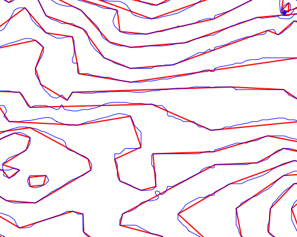

MS RFC 89: Layer Geomtransforms¶
- Date:
2013-02-05
- Author:
Alan Boudreault
- Contact:
aboudreault at mapgears.com
- Status:
Adopted and Implemented
- Version:
MapServer 6.4
1. Overview¶
MapServer 6.0 introduced the concept of geometry expressions within a styleObj-geomtransform. For example, one could write:
STYLE
GEOMTRANSFORM (buffer([shape], -5)
...
END
This would cause a buffer operation to be run on the shape before being rendered with a given style. However, if we want to work with the transformed shape and apply multiple styles, the performance of the rendering will be signicantly affected since the geom transform have to be done on each style. There are some other cases a layer geom transform would be useful. In example, if we want to simplify our lines.
This is a proposal to add a the ability to set a geomtransform at the layer level. For more information about the geomtransform implemented for the style object: see https://mapserver.org/development/rfc/ms-rfc-48.html.
2. The proposed solution¶
This RFC proposes the addition of a new layer option: GEOMTRANSFORM. The functionality is mostly the same than the the style geomtransform, except that not all the parameters will be implemented. Unless we really see a need for the following transformations at the layer level, they won’t be implemented: bbox, start, end, vertices. All other parameters will be accepted (EXPRESSIONS).
To set a geomtransform to a layer, you just need to add this option in the mapfile:
LAYER NAME "my_layer"
TYPE LINE
STATUS DEFAULT
DATA "lines.shp"
GEOMTRANSFORM (simplify([shape], 10))
CLASS
STYLE
WIDTH 2
COLOR 255 0 0
END
END
Note
Note that the layer geomtransform and the style geomtransform are completely independent. Both can be used in your layer/class definitions and they will be applied properly.
2.1 Implementation Details¶
Layer geomtransform would support all query requests. The logic of the geomtransform will be done in msLayerNextShape() and msLayerGetShape() functions. This would allow a user to interact with transformed features. ie. mapscript, WFS.
2.2 Unit Coordinates¶
There is a particularity between STYLE and LAYER GEOMTRANSFORM. STYLE-level GEOMTRANSFORM receives a shape in pixel coordinates, whereas the LAYER-level GEOMTRANSFORM will receive the raw shape in ground coordinates (meters, degrees, etc.). The argument to methods such as simplify() must be in the same units as the coordinates of the shapes at that point of the rendering workflow, i.e. pixels at the STYLE-level and in ground units at the LAYER-level.
LAYER NAME "my_layer"
TYPE LINE
STATUS DEFAULT
DATA "lines.shp"
GEOMTRANSFORM (simplify([shape], 10)) ## 10 ground units
CLASS
STYLE
GEOMTRANSFORM (buffer([shape], 5) ## 5 pixels
WIDTH 2
COLOR 255 0 0
END
END
END
It is also not possible at all to deal with values in ground units at the style level because we do not have information about map cellsize at that level in the code
2.3 Pixel value at Layer level¶
In cases where we want to pass a pixel value at the layer level, a [map_cellsize] variable will be available.
LAYER NAME "my_layer"
TYPE LINE
STATUS DEFAULT
DATA "lines.shp"
# 10 * [map_cellsize] == 10 pixels converted to ground units
GEOMTRANSFORM (simplify([shape], [map_cellsize]*10))
...
To get this variable working in the math expression parser, the [map_cellsize] has to be converted into the layer ground unit. If you choose to use [map_cellsize] in your GEOMTRANSFORM expression, you must explicitly set the UNITS option in the layer.
2.4 Vector formats supported¶
All vector formats will be supported. This also include all formats of OGR (CONNECTIONTYPE OGR).
3. New Geomtransform Parameters¶
3 new parameters will be added as a geomtransform parameter:
simplify: Simplify using GEOS. More info: GEOS Simplify
simplifypt: SimplifyPreserveTopology using GEOS. More info: GEOS SimplifyPreserveTopology
generalize: Custom implementation of the following algorithm: https://trac.osgeo.org/gdal/ticket/966
Those parameters will be available through the style geomtransform as well. Here is an example of the simplifypt geomtransform (the blue line is the original shape and the red one the transformed shape):

4. MapScript¶
The ability to get/set the layer-level geomtransform will be added to mapscript. The geomtransform is handled internally and does not affect anything else.
5. Backwards Compatibility Issues¶
This change provides a new functionality with no backwards compatibility issues being considered.
6. Tests¶
msautotest will be modified to add some tests of this new functionality.
7. Bug ID¶
8. Voting history¶
+1 from Jeff, Olivier, Stephen, Michael, Umberto and Steve.